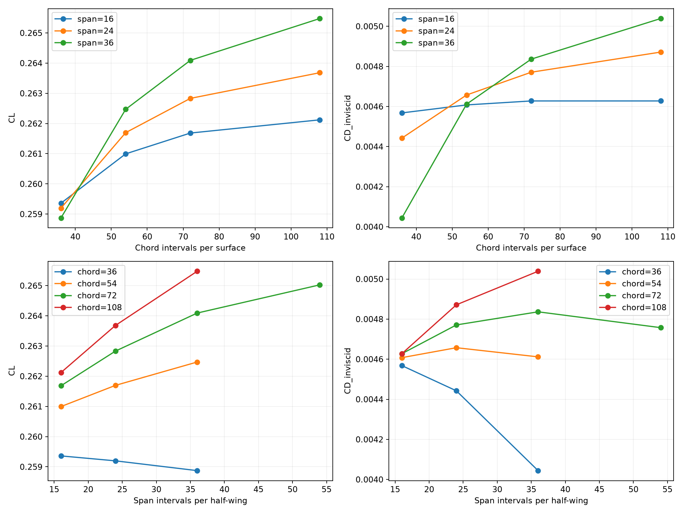
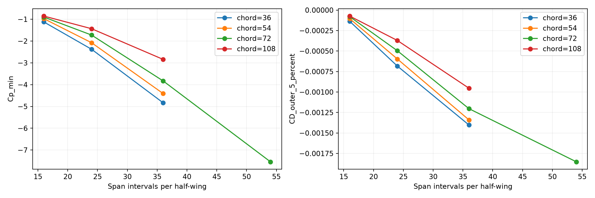

Resultado: la estabilidad global mejora, pero la presión local todavía falla. En la extensión c72_s36 → c72_s54, CL cambia 0.354% y CD 1.633%; Cp RMS=0.020404, frente al límite 0,02. El Cp mínimo pasa de -3.829 a -7.538, en ambos casos junto a la punta. No se declara convergencia.
Mismo CAD, condiciones, puntas abiertas, raíz conectada, distribución bounded, triangulación simétrica y reconstrucción lineal de presión. No se usa FLOWPanel de referencia como objetivo de ajuste.
Las filas exploran resolución de cuerda y las columnas envergadura por separado. No basta que una dirección se estabilice: la otra puede seguir cambiando el resultado. Las últimas dos parejas deben cumplir CL ≤1%, CD ≤5%, Cp RMS ≤0,02 y p95 ≤0,05. Dominio local: x/c=0,01…0,99 y 2y/b=0,05…0,95; extremos excluidos sólo de ese criterio local, nunca de la fuerza total.
El ensayo previo de refinamiento simultáneo conserva su resultado: False. No se reemplaza por una secuencia más favorable.

| Caso | panels | CL | CD_inviscid | CL_wake | CD_trefftz | Cp_min | Cp_min_abs_eta | CD_outer_5_percent | CD_inner_95_percent |
|---|---|---|---|---|---|---|---|---|---|
| c36_s16 | 4608 | 0.2593606 | 0.004567979 | 0.2639343 | 0.004541347 | -1.124762 | 0.9869721 | -0.0001365284 | 0.004704508 |
| c36_s24 | 6912 | 0.2591971 | 0.004442318 | 0.2624824 | 0.004606341 | -2.376546 | 0.9984688 | -0.0006833901 | 0.005125708 |
| c36_s36 | 10368 | 0.2588731 | 0.00404414 | 0.2615247 | 0.004657234 | -4.831778 | 0.9990318 | -0.00140176 | 0.0054459 |
| c54_s16 | 6912 | 0.2609948 | 0.004607809 | 0.2640845 | 0.004565205 | -0.974311 | 0.9869721 | -0.0001042039 | 0.004712013 |
| c54_s24 | 10368 | 0.2616967 | 0.004657315 | 0.2626595 | 0.004628719 | -2.0762 | 0.9984688 | -0.0005968356 | 0.005254151 |
| c54_s36 | 15552 | 0.26247 | 0.004611693 | 0.2617258 | 0.004678062 | -4.407586 | 0.9990318 | -0.001339469 | 0.005951162 |
| c72_s16 | 9216 | 0.2616837 | 0.004627613 | 0.2641561 | 0.004579227 | -0.9000265 | 0.9974385 | -7.936947e-05 | 0.004706982 |
| c72_s24 | 13824 | 0.2628321 | 0.004770988 | 0.2627383 | 0.004641684 | -1.724839 | 0.9984688 | -0.0004962725 | 0.00526726 |
| c72_s36 | 20736 | 0.2640916 | 0.004836379 | 0.2618149 | 0.004690211 | -3.828556 | 0.9990318 | -0.001202807 | 0.006039185 |
| c72_s54 | 31104 | 0.2650256 | 0.004757414 | 0.2612159 | 0.004726754 | -7.537777 | 0.9993702 | -0.001851165 | 0.00660858 |
| c108_s16 | 13824 | 0.2621212 | 0.00462763 | 0.2642294 | 0.004595306 | -0.8548718 | 0.9974385 | -7.298992e-05 | 0.00470062 |
| c108_s24 | 20736 | 0.2636819 | 0.00487137 | 0.2628151 | 0.004656544 | -1.433898 | 0.9969376 | -0.0003708815 | 0.005242251 |
| c108_s36 | 31104 | 0.2654764 | 0.005038759 | 0.2618987 | 0.00470411 | -2.840925 | 0.9990318 | -0.0009530329 | 0.005991792 |
CL_wake y CD_trefftz son diagnósticos de la circulación y estela rígida. No reemplazan ni corrigen los coeficientes integrados de presión. La contribución exterior es una descomposición de la fuerza original, no un recorte.

La división de fuerzas usa el centroide de cada triángulo para asignarlo a la región interior o exterior. Los valores extremos son los originales, sin suavizado. Un total estable puede ocultar compensaciones entre regiones.
| Pareja | ΔCL % | ΔCD % | Cp RMS | Cp p95 | Cumple |
|---|---|---|---|---|---|
| chord: c36_s16 → c54_s16 | 0.63008 | 0.87193 | 0.01588 | 0.030769 | True |
| chord: c54_s16 → c72_s16 | 0.26394 | 0.42978 | 0.015441 | 0.031252 | True |
| chord: c72_s16 → c108_s16 | 0.16719 | 0.00038598 | 0.015089 | 0.032911 | True |
| chord: c36_s24 → c54_s24 | 0.96439 | 4.8397 | 0.016208 | 0.035193 | True |
| chord: c54_s24 → c72_s24 | 0.43387 | 2.4407 | 0.014658 | 0.034394 | True |
| chord: c72_s24 → c108_s24 | 0.3233 | 2.104 | 0.013598 | 0.032774 | True |
| chord: c36_s36 → c54_s36 | 1.3894 | 14.034 | 0.01965 | 0.042035 | False |
| chord: c54_s36 → c72_s36 | 0.61781 | 4.8721 | 0.016294 | 0.041331 | True |
| chord: c72_s36 → c108_s36 | 0.52435 | 4.1846 | 0.014961 | 0.036368 | True |
| span: c36_s16 → c36_s24 | 0.06307 | 2.7509 | 0.017789 | 0.033239 | True |
| span: c36_s24 → c36_s36 | 0.12497 | 8.9633 | 0.019555 | 0.040199 | False |
| span: c54_s16 → c54_s24 | 0.26893 | 1.0744 | 0.016627 | 0.033145 | True |
| span: c54_s24 → c54_s36 | 0.2955 | 0.97957 | 0.01896 | 0.03889 | True |
| span: c72_s16 → c72_s24 | 0.43886 | 3.0983 | 0.016928 | 0.034157 | True |
| span: c72_s24 → c72_s36 | 0.47919 | 1.3706 | 0.018399 | 0.03725 | True |
| span: c72_s36 → c72_s54 | 0.35367 | 1.6327 | 0.020404 | 0.04215 | False |
| span: c108_s16 → c108_s24 | 0.59539 | 5.267 | 0.016768 | 0.034415 | False |
| span: c108_s24 → c108_s36 | 0.68056 | 3.4362 | 0.016763 | 0.033865 | True |
Estabilidad direccional no equivale a convergencia simultánea ni a una cota del error continuo. No se declara convergencia completa con este ensayo.